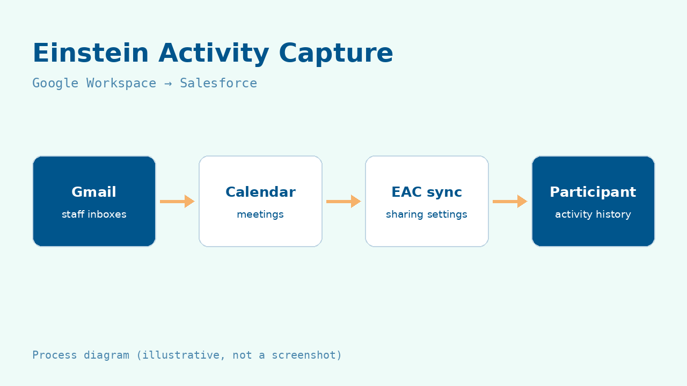

Connecting staff Gmail and calendars to Salesforce with Einstein Activity Capture, then training the team to use it, at Clore Social Leadership.
Programme staff had no central view of participant interactions. Emails, meetings and other touchpoints sat in individual inboxes, so there was no engagement history to look at, and leadership couldn’t get an accurate picture of participant relationships.
I configured and rolled out Einstein Activity Capture across the org, connecting staff Google Workspace accounts to Salesforce so emails and calendar activity sync automatically against participant records.
I set up the data visibility and sharing settings so the right teams could see the right activity data, then ran hands-on training sessions to get the whole team using it.
Leadership and programme staff now see every participant’s engagement history directly in Salesforce. Inbox silos are gone, and outreach and relationship decisions are based on the data.
